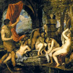

Діана, у римській міфології богиня природи і полювання, вважалася уособленням місяця, як її брат Аполлон в період позднеримской античності ототожнювався з сонцем. Діані ще супроводжував епітет "богиня трьох доріг", тлумачити як знак потрійної влади Діани: на небі, на землі і під землею. Богиня також мала славу покровителькою полонених Римом латинян, плебеїв і рабів.
Річниця заснування храму Діани на Авентине, одному з семи римських пагорбів, вважалася їх святом, що забезпечило богині популярність серед нижчих класів. З цим храмом пов'язаний переказ про незвичайну корові: було передвіщено, що той, хто принесе її в жертву богині в святилище на пагорбі Авентине, забезпечить своєму місту владу над усією Італією.
Коли цар Сервій Туллій дізнався про пророкування, він хитрістю заволодів коровою, приніс тварина в жертву Діані і прикрасив храм його рогами. Діана ототожнювалася з грецькими Артемідою і богинею мороку і чарів Гекатой.
З Діаною пов'язаний міф про нещасний мисливця Актеона. Юнака, який побачив купалася прекрасну богиню, Діана-Артеміда в гніві перетворила в оленя, якого розтерзали власні пси.